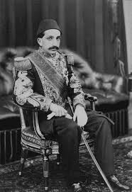
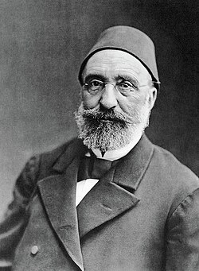
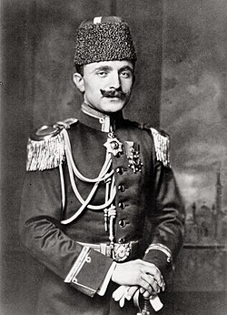

Kanun-ı Esasi yeniden yürürlüğe girdi. Meclis-i Mebusan için seçimler başlıyor. İstanbul'dan Selanik'e kadar halk sokaklara döküldü.
Rumeli'deki şehirlerden gelen meşrutiyet istekleri ve ordudaki hareketlenme büyüyünce, padişah dün gece uzun bir görüşmenin ardından kararını verdi.
Çıkarılan ferman ile 1876'da ilan edilen Kanun-ı Esasi yeniden yürürlüğe girdi. Meclis-i Mebusan için seçimlerin hemen başlayacağı duyuruldu.
Karar telgrafla şehir şehir duyuruldu. Postane önlerinde toplanan halk haberi sevinçle karşıladı. Dükkânlar kapandı, okullar tatil edildi. Akşam olunca şehirler ışıklarla donatıldı.
Yıllardır gazetelere uygulanan sansür dünden itibaren kaldırıldı. Yazarlar uzun bir aradan sonra ilk kez serbestçe yazabiliyor. Elinizdeki bu sayı da o özgür günlerin ilk ürünüdür.
Dün gece ülke için önemli bir karar alındı. Sultan II. Abdülhamid Han'ın fermanıyla, otuz yıldır kapalı duran Kanun-ı Esasi yeniden yürürlüğe girdi. Böylece halk ikinci kez meşrutiyet yönetimine kavuştu.
Bundan sonra devlet yalnızca tek bir kişi tarafından değil, halkın seçeceği milletvekillerinden oluşan Meclis-i Mebusan ile birlikte yönetilecek. Seçim hazırlıklarına şimdiden başlandı.

Resmi açıklamaya göre milletvekili seçimleri kısa sürede yapılacak ve Meclis-i Mebusan İstanbul'da toplanacak. Otuz yıl önce kapatılan meclis, bu kez halkın çabasıyla yeniden açılıyor.
Bugünkü kararın değerini anlamak için 1876 yılını hatırlamak gerekir. O yıl Mithat Paşa ve arkadaşlarının çabasıyla ilk Kanun-ı Esasi ilan edilmiş, ülke Birinci Meşrutiyet'e kavuşmuştu.
Ama 1877'de başlayan Osmanlı-Rus Savaşı bahane edilerek 1878'de Meclis-i Mebusan süresiz kapatıldı. Kanun-ı Esasi tamamen kaldırılmadı, fakat uygulanmadı. Otuz yıl boyunca kâğıt üzerinde kaldı.
Bugün ilan edilen II. meşrutiyet, işte o yarım kalan işin tamamlanmasıdır.
Hürriyetin ilan edilmesinin önünü Rumeli'deki subaylar açtı. Kolağası Resneli Niyazi Bey, yanına aldığı asker ve gönüllülerle Resne'de dağa çıktı ve Kanun-ı Esasi'nin yeniden ilan edilmesini istedi.
Aynı günlerde Enver Paşa ve Eyüp Sabri Bey de benzer hareketlere katıldı. Geçen Haziran ayında Reval'de yapılan görüşmeden sonra Rumeli'nin geleceğiyle ilgili endişe artmıştı. Hareket de bu yüzden hızla büyüdü. Padişah, bu tutum karşısında istekleri kabul etmek zorunda kaldı.
Haber duyulur duyulmaz meydanlar doldu. Selanik, Manastır, İzmir ve İstanbul'da halk "Yaşasın Hürriyet" diye bağırarak yürüdü.
Farklı din ve milletlerden insanların bir arada kutlama yaptığı, feslerini havaya attığı görüldü. Camilerde ve diğer ibadethanelerde dualar edildi. Şehirler gece geç saatlere kadar şenlik içindeydi.
Gazete satıcılarının önünde uzun kuyruklar oluştu. Meşrutiyet haberini taşıyan sayılar kısa sürede tükendi. Bazı satıcılar yeni baskı için matbaaların önünde bekledi.


Meşrutiyetin ilan edilmesi bir başlangıçtır. Önümüzdeki haftalarda milletvekili seçimleri yapılacak ve farklı görüşlerin yer aldığı bir meclis kurulacak. Bu, halk için yeni bir deneyim olacak.
Ama hürriyeti korumak, onu ilan etmekten daha zordur. Ülkenin içeride ve dışarıda karşılaştığı sorunlar bitmiş değil. Bugünkü sevinç yerindedir. Yine de asıl iş bundan sonra başlıyor.